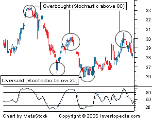

Relative Strength Index - RSI
The relative strength index (RSI) is a momentum indicator developed by noted technical analyst Welles Wilder, that compares the magnitude of recent gains and losses over a specified time period to measure speed and change of price movements of a security. It is primarily used to attempt to identify overbought or oversold conditions in the trading of an asset.
Moving Average - MA
A moving average (MA) is a widely used indicator in technical analysis that helps smooth out price action by filtering out the “noise” from random price fluctuations. It is a trend-following, or lagging, indicator because it is based on past prices. The two basic and commonly used moving averages are the simple moving average (SMA), which is the simple average of a security over a defined number of time periods, and the exponential moving average (EMA), which gives greater weight to more recent prices. The most common applications of moving averages are to identify the trend direction, and to determine support and resistance levels. While moving averages are useful enough on their own, they also form the basis for other technical indicators such as the Moving Average Convergence Divergence (MACD).
Bollinger Band
A Bollinger Band®, developed by famous technical trader John Bollinger, is plotted two standard deviations away from a simple moving average.In this example of Bollinger Bands®, the price of the stock is bracketed by an upper and lower band along with a 21-day simple moving average. Because standard deviation is a measure of volatility, when the markets become more volatile, the bands widen; during less volatile periods, the bands contract.
Simple Moving Average - SMA
A simple moving average (SMA) is an arithmetic moving average calculated by adding the closing price of the security for a number of time periods and then dividing this total by the number of time periods.
As shown in the chart above, many traders watch for short-term averages to cross above longer-term averages to signal the beginning of an uptrend. Short-term averages can act as levels of support when the price experiences a pullback.

Parabolic SAR
Developed by Welles Wilder, the Parabolic SAR refers to a price-and-time-based trading system. Wilder called this the “Parabolic Time/Price System.” SAR stands for “stop and reverse,” which is the actual indicator used in the system. SAR trails price as the trend extends over time. The indicator is below prices when prices are rising and above prices when prices are falling. In this regard, the indicator stops and reverses when the price trend reverses and breaks above or below the indicator.
Wilder introduced the Parabolic Time/Price System in his 1978 book, New Concepts in Technical Trading Systems. This book also includes RSI, Average True Range (ATR), and the Directional Movement Concept (ADX). Despite being developed before the computer age, Wilder's indicators have stood the test of time and remain extremely popular.
Alligator Indicator
The Alligator Indicator was developed by Bill Williams and combines moving averages with fractal geometry. The indicator helps traders to identify if the market is trending. It consists of 3 lines: the blue line (aka the Alligator's Jaw), the red Line (aka the Alligator's Teeth) and the green Line (aka the Alligator's Lips). Each have different lookback periods and offsets that can be set by the user. The alligator is easy to use and can find trade setups, based on how close together or how far apart the lines are, resembling an alligator opening and closing his mouth. This indicator can be used in combination with other analysis techniques.
Stochastic Oscillator
The stochastic oscillator is a momentum indicator comparing the closing price of a security to the range of its prices over a certain period of time. The sensitivity of the oscillator to market movements is reducible by adjusting that time period or by taking a moving average of the result.
